Have you ever run a user experience test on your website?

Course I have! Full in-depth UA!
I've studied Analytics/Heatmaps before
No, but I've always wanted to
No, I haven't.
I don't want/know how to run a test.
Let’s get to the bottom of this, shall we?